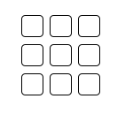

<!-- Image and text -->
<nav class="navbar navbar-dark bg-dark font-weight-bold align-content-center">
  <a class="navbar-brand" href="#">
    
    Financial Intermediatory Funds(FIF)
  </a>
</nav>
<!-- Image and text End -->

<!--Second Text Bar -->

<nav class="navbar navbar-light bg-light py-0">
  <h6 class="navbar-brand">
    Adaptation Fund(AF) : Project Performance Report(PPR)
  </h6>
</nav>

<!--Second Text Bar End -->

<!-- SideNav Bar-->

<!-- SideNav Bar End-->

<router-outlet></router-outlet>
